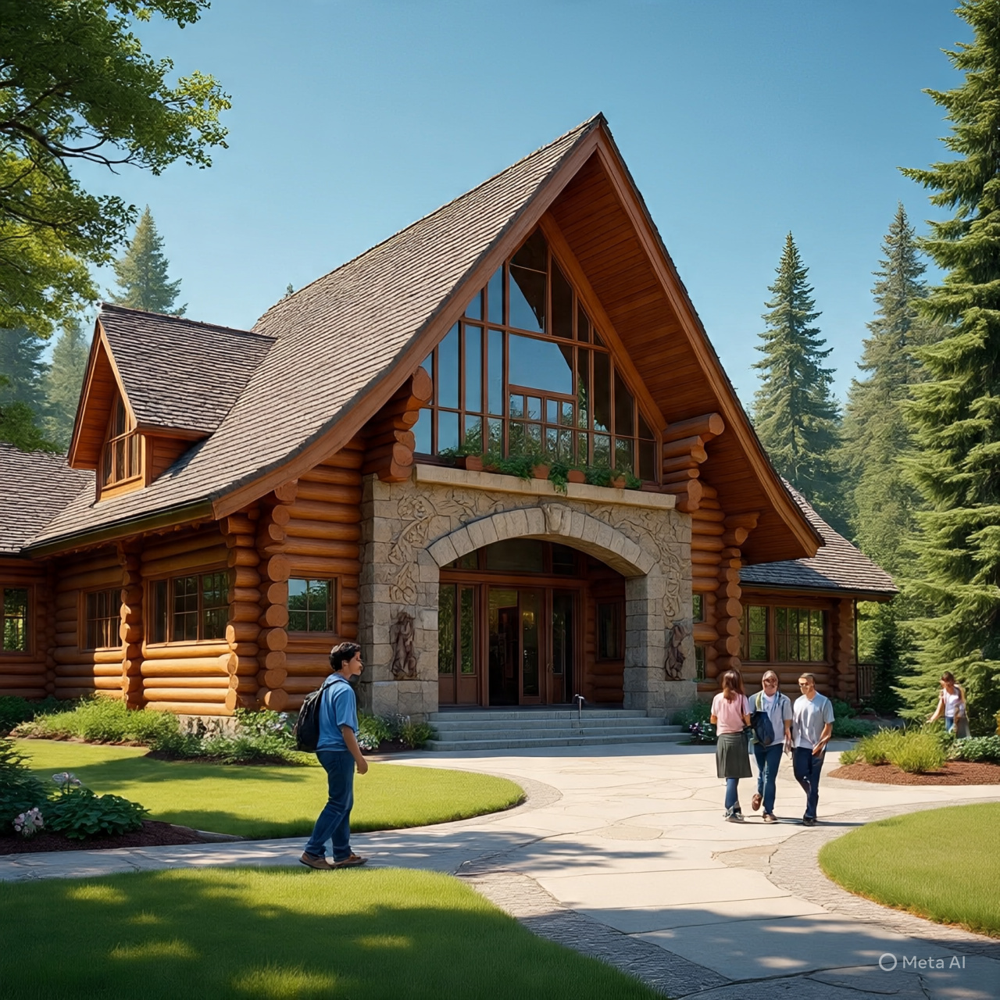

Welcome to Hillstone High School
A place of Excellence, Growth, and Opportunity
Established in 2021 durong the challenges of the COVID-19 pandemic, Hillstone High School stands a beacon of resilience, hope and transformation. Founded by the visionary Dr Hallan Jamniz, our instution is dedicated to nurturing well-rounded individuals through academic excellence, practical skills, and strong ethical values.
A community rooted in values guided by Anglican principles, we embrance diversity and respect all religious beliefs, fostering an inclusive and harmonious learning environment. At Hillstone High School, students grow in discpline, smartness, respect for self and school property, fear of God and deep commitment to academic excellence.
Comprehensive education for a bright future Hillstone High School offers both Ordinally(O) and Advanced(A) level in Arts and Sciences, with flexible day and boarding options. Our well-equipped classrooms, morden boarding facilities and serene atmosphere create the perfect space for academic and personal development.
Beyond traditional academics, we prepare students for life with vocational and skills based training in tailoring, welding and metal fabrication, construction and building, and performing arts. These programs empower students with valuable, marketable skills, shaping them into confident, independent individuals ready to thrive in their chosen careers.
At Hillstone High School, every student's potential is nurtured, every dream is valued, and every future is buit with purpose. Join us and experience education that goes beyond the classroom!
We warmly welcome yo to be part of this incredible journey. Let's create, learn, and succeed together!
Mission Statement
To produce a productive and well-disciplined citizens ready to face the challenges of the world
Vision Statment
Grooming a creative, educative and God-fearing citizens ready to postively transform the society
About us
The school was established in 2009, it has become a center of academic excellence. Our vision is to provide responsible and well rounded individuals prepared for highereducation and future careers.
- Experienced and passionate teachers
- Modern laboratties and library
- Strong moral and spiritual foundation
Academics
We offer a broad and balanced curriculum including:
- Sciences-Physics, Biology, Chemistry
Admission
Admission is open to students of all backgrounds. To enroll:
- Pick up an application form from the school office.
- Submit the completed form with the previous academic records.
- Attend an interview and entrance assesment.
Gallery

Contact Us
Address:P.O. Box 256, Kampala,Uganda
Phone:+256701763330 & +256776535431
Email: hillstonehighschool@gmail.com